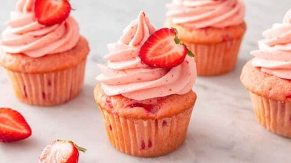

Strawberry Cupcakes

Ingerdiants
1 ½ cups all-purpose flour
1 tsp baking powder
¼ tsp salt
½ cup unsalted butter (softened)
¾ cup granulated sugar
2 large eggs
½ cup fresh strawberry purée
¼ cup milk
1 tsp vanilla extract